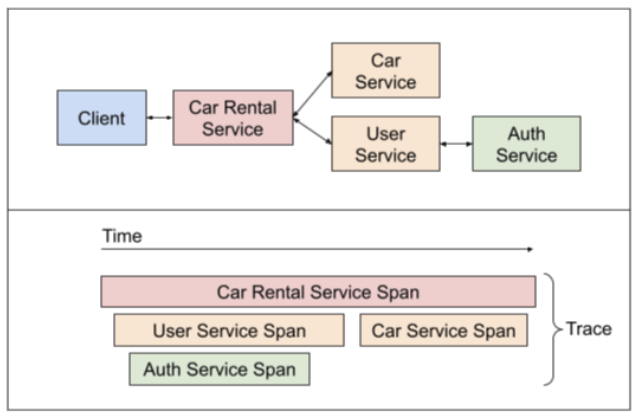
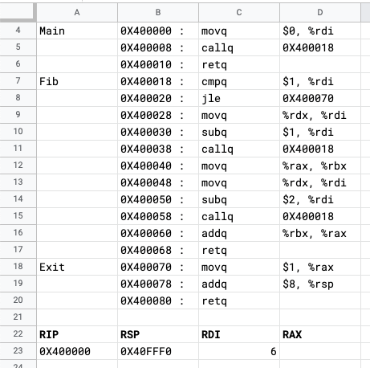
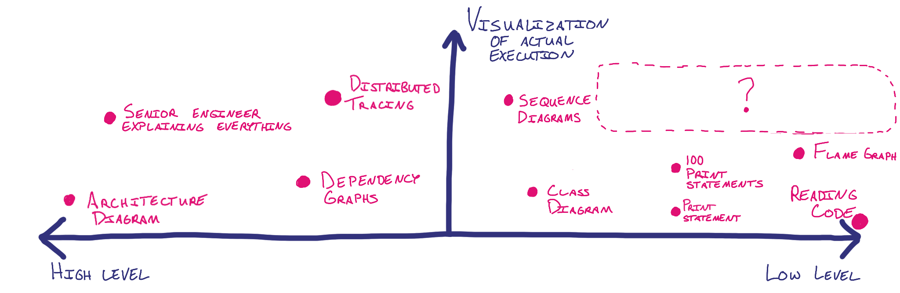

How do you visualize code?
And can we better leverage our natural spatial abilities?
Jan 17, 2022 · 1783 words · 9 minutes read
The other day I was reading about the development of personal computers and the desktop GUI, and I was thinking about how comfortable we all have become with the analogy of the “desktop” for our personal computers. We place files in folders and keep them on our desktops. There’s a lot of physical action going on.
Humans are very good at understanding spaces, especially when it comes to remembering physical spaces, and it got me thinking about how we commonly visualize code. Is there any good way to tap into that when thinking about and visualizing code?
How do you visualize code?
This made me think about how I tend to visualize code, and it’s a little hard to describe. I think it usually lives in my head in a variety of ways, depending on the level of abstraction and specificity, and there’s some combination of all of them there at the same time. Depending on the need, I can jump between them pretty well, especially if I’m very familiar with the codebase.
For example, when I’m imagining the interactions between various microservices, it’s helpful to draw big boxes around each service, treating each one like a big unit of work with RPC interactions in between.

On the other end of the spectrum, if I’m worried about the minuscule specifics of how the computer is reading what I’ve given it, it’s helpful to zoom all the way in to a representation of the physical memory.

Luckily I spend most of my time somewhere in the middle, with some balance between reading the actual code (luckily higher level than assembly), thinking about chunks of code as large units, and working with architecture diagrams and inter-system communication. Even code on its own has a lot of physical relationships already built in; think of directory paths, namespaces, line indentation, and the linear ordering of lines of code,
How well do these visualizations do?
Thinking about this made me consider a few different visualization techniques, each of which is useful in different circumstances. Consider the following incomplete list:
- Architecture diagrams
- Dependency graphs
- Distributed traces
- Sequence diagrams
- Class diagrams
- Print statements
- Flame graphs
- Reading the source code
How would we compare these? First, there seems to be a natural axis of abstractness, ranging from low level code reading to high level architecture diagrams. There seem to be a few other axes we could order them on as well.
Maybe we could rank them on how well they represent the larger system? Architecture diagrams would do well there, but a flame graph would only represent a single execution path. Maybe frequency of change? That would be an interesting one, with architecture diagrams (hopefully) staying pretty static as the source code changes frequently.
What if we thought about how well the visualization represents the actual code execution through the system? In this case, maybe a high level architecture diagram wouldn’t score very high, as it would abstract away many of the details inside the service boxes. Distributed tracing could do better, though the level of specificity would depend on the number of tracepoints you have. Class diagrams, while helpful for visualizing the relationship between classes, may not represent the actual paths taken through. Flame graphs would show a clear execution path, but again they would only show a single code path without giving visibility to the larger system.
Graphing these might look something like the following, (though each of these dots may be better represented as a range):
 Link to a larger version of the graph
{kind=link}
This made me think about what that upper right section would be like. What would a helpful visualization look like that provided clear insight into the details? Is there a way to visualize the path through the larger system while staying at a low level?
What would it look like if we tried to use space as well?
Looking at a diagram still feels like reading a map. There’s that moment of spatially translating what you see in the code to the diagram, much like you’d orient yourself with a map in an unfamiliar area. Like the desktop metaphor for things on our computers, I wonder if there’s another way to visualize code as things that exist in the world to make the translation easier.
What if we had a toy visualization where we represented code in physical space?
Let’s say we have the following basic example, where we have a Counter class that keeps track of a private count_ variable and allows various access methods. Maybe it’s accessed in a simple main function to do some counting.
#include <iostream>
class Counter {
public:
void reset() {
count_ = 0;
}
int get() {
return count_;
}
void incr() {
++count_;
}
void set_count(int x) {
count_ = x;
}
private:
int count_;
};
int main() {
Counter counter;
counter.reset();
counter.incr();
counter.incr();
std::cout << counter.get();
}
What if we represented different sections of the code as 3D structures? What if we represented the Counter class as a big room with incantations written on the wall? You could imagine the possible paths through the code, connections between variables and the things they represent, as pink string:
{kind=link}
What could we see with this? The first is that count_ is clearly used appropriately as a private variable, as there aren’t any pink strings from it that leave the room. The public methods are all pretty clear as well, with their pink connections to things outside of the room.
More interestingly, what would it look like with this room connected to another? The main function could be another room, with its incantation lines connected accordingly:
{kind=link}
Now we’ve got cross-room talk; where the main function calls counter.reset(), we could have a connection from the caller in main to the callee in the Counter class. You could even imagine a debugger stepping through this, watching pulses being sent across the wires with arguments and return values. Imagine being able to zoom out to a different area to see local state and values, then follow the call paths back through to the active area.
Would this be helpful?
Would something like this be helpful? I’m not sure. It would be interesting to walk through a familiar codebase with something like this, especially if you were able to explore spatially in a 3D representation (or in VR?), being able to zoom in and out as you’d like. I wonder if it would be especially useful when exploring a new codebase for the first time to see how things are connected, though I’ve definitely dealt with some codebases that I imagine would be very intimidating in a view like this. I’d love to see what a diff looked like in this view, where a new class is introduced with new connections here and there.
That being said, I think you’d run into at least the following problems when making something like this:
- Complicated code is hard enough to reason through. It might be cathartic to visualize the spaghetti in spaghetti code, but how busy would this be with very complicated code?
- How would we be able to represent things like two threads executing at the same time?
- How would you represent passing by reference instead of passing by value?
- How would you represent asynchronous work?
- How would you represent recursion? Rooms all the way down?
- How would you prevent something from this from getting stale and out of date? At the very least, it would need to be automatically generated.
Problems at the intersection of space and code
There are a few considerations that make this tricky. One is that physical locations usually change on much longer timeframes than code does. Part of the reason it’s useful to use a physical location you know well for a memory palace is because it’s the same every time in your memory. If you’re memorizing a deck of cards, you can temporarily store the ace of clubs behind the cupboard door, but the cupboard door will still be there the next time you need to store a card.
If your codebase is changing frequently, your map of how things are laid out spatially may change, regardless of whether those maps are 3D generated or purely mental. It’s like returning to an area you used to know, except instead of just the landmarks changing, imagine if the roads were rerouted as well. Even if we’re naturally gifted at remembering things spatially, if that space changes, would we still be able to benefit from visualizing that space if we had to relearn it?
It would be interesting to see how helpful something like this would be for both exploring a new code base (like using a map to explore a new city) and revisiting that codebase as it changes over time (like going back to your hometown after a long time away).
Visualizing Code
I’m not very familiar with this area of data visualization (nor the rest of data visualization, really), but in a brief search (AKA 30 minutes of Googling), I found a few projects that seem like they’re doing something similar:
- SoftVis3D: where a "‘code city’ view provides a visualization for the hierarchical structure of the project".
- Code Park: A New 3D Code Visualization Tool (2017), a “novel tool for visualizing codebases in a 3D game-like environment” with code represented as “code rooms” with code on the walls (sounds very similar now that I read this).
- Code Structure Visualization Using 3D-Flythrough (2016), with spatial metaphors and first-person exploration of code.
- Primitive, a VR collaboration startup with a Matrix-looking “Immersive Development Environment” with “new tools for visually analyzing software in 3D”.
Edit: here are a few more that readers have pointed out:
- AppMap, an automated code analysis tool that includes dependency maps and trace views.
- plurid, a framework for visualizing and debugging code in a 3D explorable structure.
- fsn (file manager), an experimental application to view a file system in 3D (featured in Jurassic Park).
If you’re aware of any others, please get in touch; I’d love to learn more!
Fun to imagine
This concept is clearly not groundbreaking, but I think it’s a fun way to think about how we work with our tools and, importantly, how we might do better. There must be better ways out there, and it’s fun to imagine what they might be.